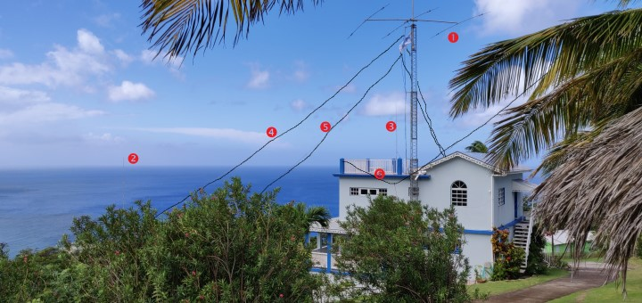

VP2MUW
DXpedition to Montserrat — November 2018
Information
We're active from 17-23 November 2018 on all HF bands from 80m to 10m, SSB and CW. (Why we're not using FT8)
We're using Elecraft K3s on all three stations. One station has a Juma amp and another station has a KPA500. The other station is barefoot.
Montserrat counts as NA-103 for IOTA.
Latest DX Spots
Updates every 10 minutes. Data from dxcluster.co.uk
Operators
The operators on this trip all live in Cambridge, England and are all former students of Cambridge University. They are members of both Cambridge University Wireless Society (G6UW/M4A) and Camb-Hams (G3PYE).
Between them, they have been to many DX locations around the world, including ZD9, ZD8, FP, VP9, VK9 and JW.
Rob, M0VFC / @rmc47
Robert Chipperfield works as a DevOps engineer for a software company called Redgate. Originally from Kent in south-east England, he has been licensed since 1995.
Dom, M0BLF / @dnas2
Dominic Smith works as Scrum Master in the software team at the Royal Society of Chemistry. He grew up in the south-west of England and has been licensed since 1996.
Dan, M0WUT / @m0wut
Daniel McGraw graduated from the University this year and has recently started work at Cambridge Consultants. He comes from the north of England and got his callsign in 2007.
QSL information
Logs will be uploaded to Club Log and LotW regularly throughout the trip. If you need a paper QSL, you can use Clublog OQRS to request a direct or bureau card. Please do not send us your card.
To use OQRS, start by searching for your callsign:
QTH
Montserrat is a British Overseas Territory in the eastern Caribbean, having a population of about 5000. It is perhaps best-known for the volcano eruption of 1995, which destroyed the capital, Plymouth, causing a mass evacuation of the residents. The southern half of the island is still an exclusion zone.
We are operating from Gingerbread Hill, in the north-west of the island. This villa, which comes complete with antenna tower and station, is well-known among radio amateurs for the excellent takeoff to North America and Europe.
Weather
MONTSERRAT WEATHERPropagation
Select the nearest location to you for the best bands to work us on:
Times shown are local time for the selected place. Predictions from VOACAP. Remember: these are only forecasts, and reality may be different. Listening and watching the cluster is always best!
Updates
Any updates during the trip will be posted on Twitter.
Antennas

1) Mosley C33-M tribander; 2) 20m vertical; 3) 17m vertical; 4) 80m dipole; 5) 40m dipole; 6) 30m dipole
Photo taken looking roughly NW, the sea path to the US
How to work us
A video guide for new hams who might want to make a DX contact with us.
Background Photo by Leonora (Ellie) Enking on Flickr. Licensed under CC-BY-NC 2.0
Operator photos © Mark Hickford.